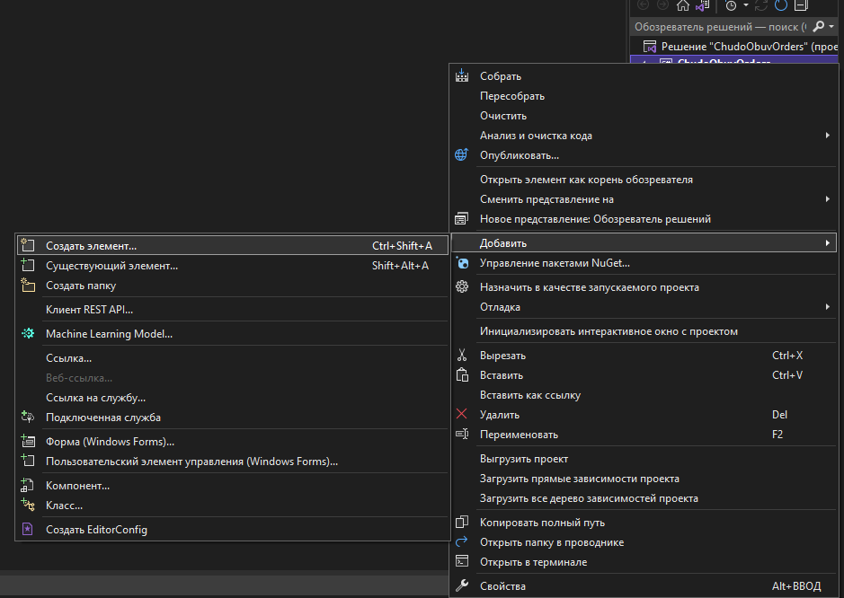
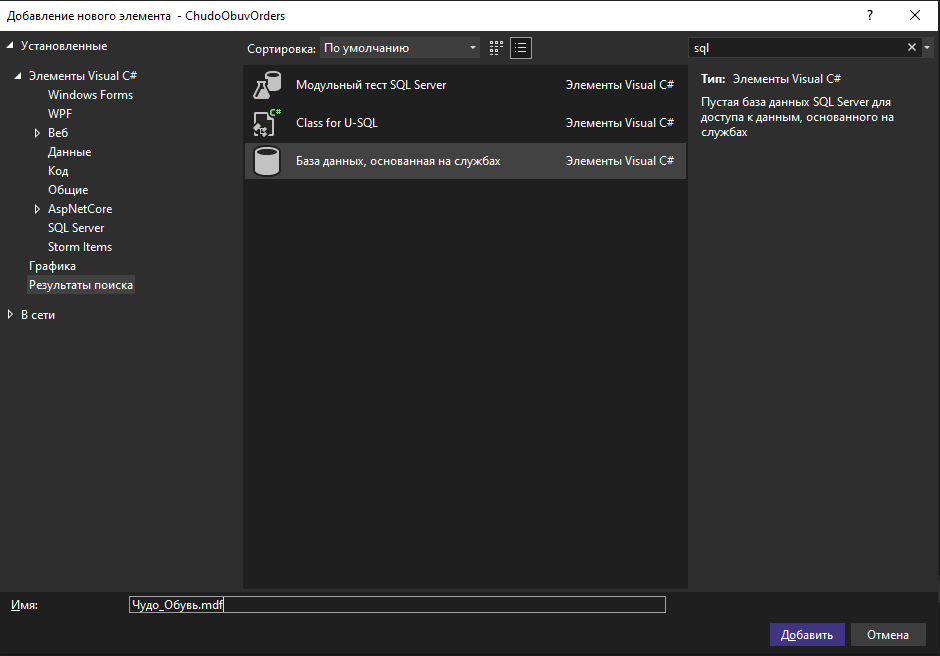
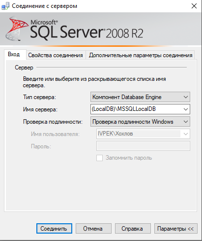
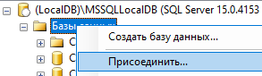
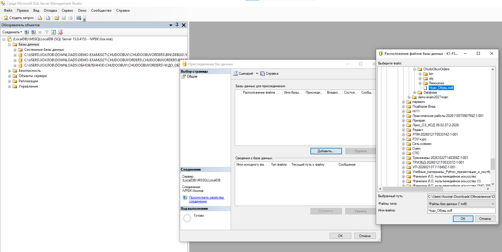
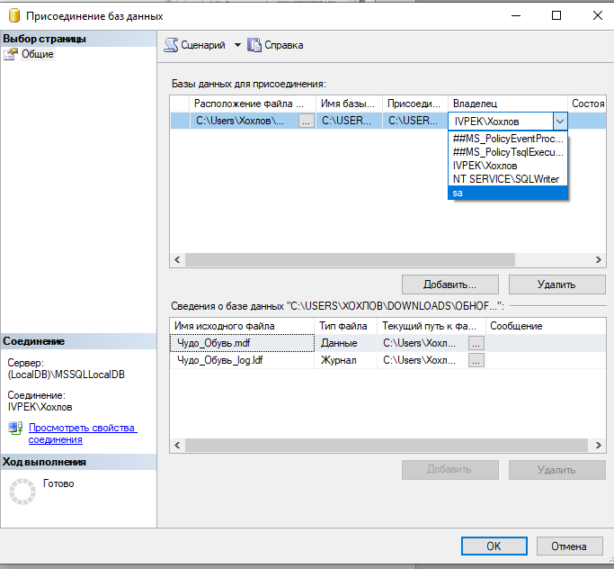

Текст задания
Формулировка из примерного КИМ (полный текст — в файле ⬇ Задания.docx). Прочитайте — дальше идёт решение по шагам.
Задание 1. Разработка базы данных средствами СУБД
Компания занимается продажей обуви. Для удобного взаимодействия с клиентами требуется система, которая дает возможность клиентам выбрать и заказать одну или несколько моделей обуви из каталога.
Функциональные требования:
- в каталоге должно храниться актуальное доступное для заказа количество товарных позиций: сочетаний модели и размера;
- для каждой модели в каталоге должно сохраняться изображение;
- клиент должен иметь возможность выбрать из каталога одну или несколько пар обуви доступного размера, модели;
- в интерфейсе должен быть доступен просмотр списка заказов с отображением ключевой информации: дата заказа, ФИО клиента;
- должно быть реализовано управление заказами.
Дальнейшая обработка заказа не входит в разрабатываемую систему оформления заказа обуви.
На основе описания предметной области (Приложение 1) необходимо создать базу данных в выбранной СУБД для разрабатываемой системы. Обязательна третья нормальная форма с обеспечением ссылочной целостности. При разработке базы данных следует обратить внимание на согласованную схему именования, создать необходимые первичные и внешние ключи, определить ограничения внешних ключей, отражающие характер предметной области.
При разработке системы заказа обуви нет необходимости воспроизводить все сущности предметной области, достаточно создать таблицы, поля с подходящими типами данных и связи, непосредственно относящиеся к разрабатываемой системе и реализуемым ею функциям.
Получить ER-диаграмму средствами СУБД или ПО для построения и редактирования диаграмм: ER-диаграмма должна быть представлена в формате PDF и содержать таблицы, связи между ними, атрибуты и ключи (типами данных на данном этапе можно пренебречь).
Заказчик системы предоставил файлы с данными (с пометкой «import» в ресурсах) для переноса в новую систему (Приложение 2). Необходимо подготовить данные файлов для импорта и загрузить в разработанную базу данных.
Сохранить полученные результаты: создать скрипт БД (с данными) или файл конфигурации с данными (.dt) для платформы «1С».
Необходимые материалы
- ⬇ Прил_1_ОЗ_КИМ_09.02.07-2-2027.docx — описание предметной области «Чудо Обувь» (Приложение 1);
- ⬇ Прил_2_ОЗ_КИМ_09.02.07-2-2027.rar — ресурсы: файлы импорта (xlsx), изображения товаров, логотип и иконка (Приложение 2).
0. О чём эта методичка
Это разбор примерного задания ДЭ 2027 года — пошаговое руководство для тех, кто впервые создаёт базу данных. Файл базы Чудо_Обувь.mdf создаётся прямо в папке проекта Visual Studio (используется встроенный LocalDB — права администратора и имя сервера не нужны). Дальше всё делается мышкой: таблицы — в конструкторе MS SQL Server, данные — копированием из Excel, итоговый скрипт — одним меню «Задачи». Писать SQL-запросы нигде не нужно. Каждый шаг в разделах 5–8 показан на скриншотах.
0.1. План работы на 50 минут
| Этап | Время |
|---|---|
| Анализ предметной области | 5 мин |
| Проектирование схемы на бумаге | 5 мин |
| Файл базы в проекте + подключение в MS SQL Server | 6 мин |
| Создание таблиц в конструкторе (мышкой) | 12 мин |
| Вставка данных мышкой | 10 мин |
| ER-диаграмма | 5 мин |
| Скрипт БД (Задачи → Создать скрипты) | 4 мин |
1. Простые термины
| Слово | Что означает простыми словами |
|---|---|
| База данных (БД) | Электронный «шкаф» с папками, где хранятся данные. |
| СУБД | Программа, которая этим «шкафом» управляет. У нас — Microsoft SQL Server. |
| LocalDB | Лёгкий SQL Server, уже встроенный в Visual Studio. Прав администратора не требует. |
| .mdf | Файл базы данных. Хранится прямо в папке проекта. |
| Серверный обозреватель | Окно Visual Studio (View → Server Explorer), через которое мы работаем с базой. |
| Таблица | Лист Excel: столбцы — поля, строки — записи. |
| Поле (столбец) | Одна характеристика: «Цена», «Наименование». |
| Запись (строка) | Один конкретный объект: товар «Кроссовки». |
| Первичный ключ (PK) | Уникальный номер записи. Как номер паспорта. |
| Внешний ключ (FK) | Ссылка на запись в другой таблице. |
| IDENTITY | Автогенерация чисел 1, 2, 3… |
| Связь 1:M | Один-ко-многим: у одной категории много товаров. |
| Ссылочная целостность | Нельзя поставить ссылку на то, чего нет. |
| 3НФ | Третья нормальная форма — правило, по которому убираем повторения. |
2. Теория: 3НФ и ключи
База данных должна быть в третьей нормальной форме (3НФ) с ссылочной целостностью.
| Понятие | Простыми словами | Пример у нас |
|---|---|---|
| Первичный ключ (PK) | Уникальный номер строки | Код_товара в Товары |
| Внешний ключ (FK) | Ссылка на строку другой таблицы | Товары.Код_категории → Категории |
| Ссылочная целостность | База не даст сослаться на несуществующую строку | нельзя создать товар с несуществующей категорией |
| 1НФ | Одно значение в одной ячейке, нет повторяющихся столбцов | размеры — не столбцы «36, 37, 38…», а строки в Товарные_позиции |
| 2НФ | Поле зависит от всего ключа, а не его части | в Товарные_позиции остаток зависит от пары «товар + размер» |
| 3НФ | Неключевое поле зависит только от ключа, а не от другого неключевого | название категории не повторяется в товаре — в Товары хранится ссылка Код_категории |
Количество × Цена_за_единицу). Иначе данные можно было бы рассогласовать.3. Предметная область «Чудо Обувь»
Компания «Чудо Обувь» продаёт обувь; клиенты выбирают и заказывают одну или несколько пар из каталога. Что нужно хранить (Приложение 1):
| Из описания | Где хранится |
|---|---|
| Пользователь: логин, фамилия, имя, отчество, роль | Пользователи, Роли |
| Товар: категория, подкатегория, производство, наименование, изображение, состав, описание, цена | Категории, Товары |
| Размерный ряд и доступные размеры | Размеры, Товарные_позиции |
| Товарная позиция = модель + размер, с остатком | Товарные_позиции |
| Заказ: дата, клиент | Заказы |
| Состав заказа: позиция, количество, цена за единицу | Строки_заказов |
- Роли: администратор, менеджер, авторизованный пользователь. «Неавторизованный пользователь» — это отсутствие входа, в БД его нет.
- Изображение — в БД хранится имя файла, сами картинки лежат в папке.
- Расчёты — в рублях.
4. Схема базы данных
Восемь таблиц. Ключ 🔑, внешний ключ ↗, линия — связь «один ко многим». Схему можно двигать и масштабировать — подробности под рисунком.
4.1. Роли
| Поле | Тип | NULL | Ключ / правило |
|---|---|---|---|
Код_роли | int | нет | PK, IDENTITY |
Название_роли | nvarchar(50) | нет |
4.2. Категории
| Поле | Тип | NULL | Ключ / правило |
|---|---|---|---|
Код_категории | int | нет | PK, IDENTITY |
Название_категории | nvarchar(100) | нет |
4.3. Размеры
| Поле | Тип | NULL | Ключ / правило |
|---|---|---|---|
Код_размера | int | нет | PK, IDENTITY |
Размер | decimal(4,1) | нет |
4.4. Пользователи
| Поле | Тип | NULL | Ключ / правило |
|---|---|---|---|
Код_пользователя | int | нет | PK, IDENTITY |
Фамилия | nvarchar(100) | нет | |
Имя | nvarchar(100) | нет | |
Отчество | nvarchar(100) | да | |
Логин | nvarchar(50) | нет | |
Код_роли | int | нет | FK → Роли |
4.5. Товары
| Поле | Тип | NULL | Ключ / правило |
|---|---|---|---|
Код_товара | int | нет | PK, IDENTITY |
Код_категории | int | нет | FK → Категории |
Подкатегория | nvarchar(100) | да | |
Наименование | nvarchar(255) | нет | |
Производство | nvarchar(150) | нет | |
Описание | nvarchar(max) | да | |
Состав | nvarchar(max) | да | |
Изображение | nvarchar(255) | да | |
Цена | decimal(10,2) | нет |
4.6. Товарные_позиции
| Поле | Тип | NULL | Ключ / правило |
|---|---|---|---|
Код_позиции | int | нет | PK, IDENTITY |
Код_товара | int | нет | FK → Товары |
Код_размера | int | нет | FK → Размеры |
Количество | int | нет | DEFAULT 0 |
4.7. Заказы
| Поле | Тип | NULL | Ключ / правило |
|---|---|---|---|
Код_заказа | int | нет | PK, IDENTITY |
Дата_заказа | datetime2 | нет | DEFAULT SYSDATETIME() |
Код_пользователя | int | нет | FK → Пользователи |
4.8. Строки_заказов
| Поле | Тип | NULL | Ключ / правило |
|---|---|---|---|
Код_строки | int | нет | PK, IDENTITY |
Код_заказа | int | нет | FK → Заказы |
Код_позиции | int | нет | FK → Товарные_позиции |
Количество | int | нет | |
Цена_за_единицу | decimal(10,2) | нет |
4.9. Связи и ссылочная целостность
| Связь | Если удалить / изменить родителя |
|---|---|
| Пользователи.Код_роли → Роли.Код_роли | удаление: запрещено · изменение ключа: каскадом |
| Товары.Код_категории → Категории.Код_категории | удаление: запрещено · изменение ключа: каскадом |
| Товарные_позиции.Код_товара → Товары.Код_товара | удаление: каскадом · изменение ключа: каскадом |
| Товарные_позиции.Код_размера → Размеры.Код_размера | удаление: запрещено · изменение ключа: каскадом |
| Заказы.Код_пользователя → Пользователи.Код_пользователя | удаление: запрещено · изменение ключа: каскадом |
| Строки_заказов.Код_заказа → Заказы.Код_заказа | удаление: каскадом · изменение ключа: каскадом |
| Строки_заказов.Код_позиции → Товарные_позиции.Код_позиции | удаление: запрещено · изменение ключа: каскадом |
4.10. Почему подкатегория и производство — поля товара
У них в задании нет собственных атрибутов (адреса, кода), поэтому отдельные таблицы не нужны: это не нарушает 3НФ. Если бы требовалось хранить, например, город производителя, его вынесли бы в таблицу.
5. Проект и файл базы данных (.mdf)
Базу не нужно устанавливать на сервер и настраивать: она хранится файлом прямо в папке проекта. Используется LocalDB — лёгкая версия SQL Server, уже встроенная в Visual Studio, поэтому права администратора не понадобятся.
Создайте проект
ChudoObuvOrders, Framework: .NET Framework 4.8 → Create.Это то же решение, в котором дальше строится вся программа (задания 2–5), — не удаляйте его.
Добавьте базу данных в проект

SQL, выбираем «База данных, основанная на службах» (в английской студии — Service-based Database (SQL Server)) и меняем название на Чудо_Обувь.mdf → Добавить.
Чудо_Обувь.mdfВ папке проекта появится файл Чудо_Обувь.mdf — это и есть база данных, пока пустая. Таблицы в ней мы создадим не в студии, а в MS SQL Server (раздел 6) — там всё делается мышкой в удобных окнах. Именно потому, что база — файл внутри проекта, программа дальше запускается без проблем на других устройствах: папка с проектом переезжает вместе с базой.
Настройте копирование в выходную папку
Чудо_Обувь.mdf в Обозревателе решения → F4 → свойство «Копировать в выходной каталог» = «Копировать более позднюю версию» (Copy if newer).bin\Debug будет сбрасываться к исходной при каждой сборке — введённые данные пропадут. «Копировать более позднюю версию» обновляет файл только после изменения структуры.Закройте проект
6. Подключаем базу в MS SQL Server (SSMS)
База — обычный файл в папке проекта. Конструктор таблиц в Visual Studio ограничен, поэтому таблицы и данные делаем в MS SQL Server (SQL Server Management Studio, SSMS). Подключим наш файл к LocalDB — это тот же экземпляр SQL Server, что встроен в Visual Studio, — и дальше всё построение идёт мышкой.
Соединение с сервером
(LocalDB)\MSSQLLocalDB → Соединить. Это позволяет локально подключиться к базе данных: экземпляр уже работает на компьютере, пароль не нужен (проверка подлинности — Windows).
(LocalDB)\MSSQLLocalDB, проверка подлинности — WindowsПрисоединить базу

Выбираем файл базы из проекта
Чудо_Обувь.mdf внутри проекта Visual Studio → ОК.
Владелец — sa
sa (чтобы были полные права на данную таблицу и базу в целом) → ОК. База появится в папке «Базы данных».
sa — полные права на базу данныхsqllocaldb stop MSSQLLocalDB, затем повторите присоединение. После работы база остаётся файлом в проекте — ничего «устанавливать» не нужно.Дальше добавляем таблицы и данные — разделы 7 и 8. Команды SQL нигде не потребуются: конструктор и меню SSMS сделают всё сами.
7. Создаём таблицы мышкой (конструктор SSMS)
Таблицы строим в конструкторе таблиц SSMS — визуально, без единой команды SQL. Порядок важен: сначала справочники, потом таблицы со ссылками. Роли → Категории → Размеры → Пользователи → Товары → Товарные_позиции → Заказы → Строки_заказов
Новая таблица
Чудо_Обувь → правой кнопкой по папке Таблицы → Создать → Таблица… Откроется конструктор: сетка из трёх колонок — «Имя столбца», «Тип данных», «Разрешить значения NULL».Столбцы
nvarchar(100)). Галочка «Разрешить значения NULL» разрешает пустые ячейки — снимайте её для обязательных полей.Первичный ключ
IDENTITY (номер сам растёт)
Уникальность (UNIQUE)
Название_роли) → свойство «Уникальный ключ» = Да → закройте окно.Проверка значения (CHECK)
([Цена]>=(0)) → ОК → закройте окно.Связь с родителем (внешний ключ)
Связь не создастся, если родительская таблица ещё не сохранена, — поэтому порядок построения именно такой: от справочников к дочерним таблицам.
Сохранить
Роли) → ОК. Таблица появится в папке «Таблицы».7.1. Роли
| Column Name | Data Type | Allow Nulls |
|---|---|---|
Код_роли | int | ☐ |
Название_роли | nvarchar(50) | ☐ |
- PK:
Код_роли(IDENTITY) - UNIQUE:
Название_роли
7.2. Категории
| Column Name | Data Type | Allow Nulls |
|---|---|---|
Код_категории | int | ☐ |
Название_категории | nvarchar(100) | ☐ |
- PK:
Код_категории(IDENTITY) - UNIQUE:
Название_категории
7.3. Размеры
| Column Name | Data Type | Allow Nulls |
|---|---|---|
Код_размера | int | ☐ |
Размер | decimal(4,1) | ☐ |
- PK:
Код_размера(IDENTITY) - UNIQUE:
Размер
7.4. Пользователи
| Column Name | Data Type | Allow Nulls |
|---|---|---|
Код_пользователя | int | ☐ |
Фамилия | nvarchar(100) | ☐ |
Имя | nvarchar(100) | ☐ |
Отчество | nvarchar(100) | ☑ |
Логин | nvarchar(50) | ☐ |
Код_роли | int | ☐ |
- PK:
Код_пользователя(IDENTITY) - UNIQUE:
Логин - FK:
Код_роли→ Роли(Код_роли), правило обновления — «Каскад», правило удаления — «Без действия»
7.5. Товары
| Column Name | Data Type | Allow Nulls |
|---|---|---|
Код_товара | int | ☐ |
Код_категории | int | ☐ |
Подкатегория | nvarchar(100) | ☑ |
Наименование | nvarchar(255) | ☐ |
Производство | nvarchar(150) | ☐ |
Описание | nvarchar(max) | ☑ |
Состав | nvarchar(max) | ☑ |
Изображение | nvarchar(255) | ☑ |
Цена | decimal(10,2) | ☐ |
- PK:
Код_товара(IDENTITY) - CHECK:
Цена >= 0 - FK:
Код_категории→ Категории(Код_категории), правило обновления — «Каскад», правило удаления — «Без действия»
7.6. Товарные_позиции
| Column Name | Data Type | Allow Nulls |
|---|---|---|
Код_позиции | int | ☐ |
Код_товара | int | ☐ |
Код_размера | int | ☐ |
Количество | int | ☐ |
- PK:
Код_позиции(IDENTITY) - UNIQUE:
Код_товара, Код_размера - CHECK:
Количество >= 0 - FK:
Код_товара→ Товары(Код_товара), правило обновления — «Каскад», правило удаления — «Каскад» - FK:
Код_размера→ Размеры(Код_размера), правило обновления — «Каскад», правило удаления — «Без действия»
7.7. Заказы
| Column Name | Data Type | Allow Nulls |
|---|---|---|
Код_заказа | int | ☐ |
Дата_заказа | datetime2 | ☐ |
Код_пользователя | int | ☐ |
- PK:
Код_заказа(IDENTITY) - FK:
Код_пользователя→ Пользователи(Код_пользователя), правило обновления — «Каскад», правило удаления — «Без действия»
7.8. Строки_заказов
| Column Name | Data Type | Allow Nulls |
|---|---|---|
Код_строки | int | ☐ |
Код_заказа | int | ☐ |
Код_позиции | int | ☐ |
Количество | int | ☐ |
Цена_за_единицу | decimal(10,2) | ☐ |
- PK:
Код_строки(IDENTITY) - CHECK:
Количество > 0 - CHECK:
Цена_за_единицу >= 0 - FK:
Код_заказа→ Заказы(Код_заказа), правило обновления — «Каскад», правило удаления — «Каскад» - FK:
Код_позиции→ Товарные_позиции(Код_позиции), правило обновления — «Каскад», правило удаления — «Без действия»
8. Заполнение данными мышкой (Excel → база)
8.1. Файлы Excel
Из материалов экзамена — пять файлов. Ниже — оригиналы и версии, уже приведённые к виду для импорта (я проверил, что в них все связи сходятся).
| Что внутри | Строк | Оригинал | Готово к импорту | Куда попадёт |
|---|---|---|---|---|
| Товары: категория, подкатегория, картинка, название, производство, описание, состав, цена | 31 | xlsx | xlsx · csv | Категории, Товары |
| Размеры | 35 | xlsx | xlsx · csv | Размеры |
| Остатки: товар + размер + количество | 92 | xlsx | xlsx · csv | Товарные_позиции |
| Пользователи и роли | 20 | xlsx | xlsx · csv | Пользователи (Роли — вручную) |
| Заказы: 10 заказов, по строке на позицию | 30 | xlsx | xlsx · csv | Заказы, Строки_заказов |
Для вставки в базу подготовлен ещё один файл — ⬇ Вставка_в_базу.xlsx: восемь листов, по одному на таблицу, и в каждом готовые строки с уже посчитанными кодами (Код_категории, Код_товара, Код_роли…). Считать коды руками не нужно — они согласованы между листами и с порядком заполнения выше.
8.2. Что не так в оригинальных файлах
Если переносить «как есть», часть данных молча потеряется. Вот что я нашёл:
| Проблема | Где | Чем грозит | Исправление |
|---|---|---|---|
| Неразрывный пробел вместо обычного | Products, ячейка D18 («…кожа с металлическими вставками») | В остатках и заказах название с обычным пробелом — совпадения нет, остатки этого товара не найдутся | Заменить на обычный пробел |
| Пробел в конце ячейки | Products: D25 («Азимут Бег »), F11, F12, F27, F32 (описание) | Название «Азимут Бег » ≠ «Азимут Бег» → товар без остатков и заказов | Удалить пробелы по краям |
| Названия не совпадают | Products D27: «Черные туфли в классическом стиле — база для деловых образов»; в остатках и заказах: «Черные туфли в классическом стиле» | Связать остатки и заказы с товаром нельзя | Привести к одному написанию (в готовых файлах — короткое) |
| Размеры — то текст, то число | Sizes и Stock: 36.5, 37.5, 38.5, 39.5, 40.5, 41.5, 42.5 записаны текстом, остальные — числом | При вставке в базу текстовые размеры не превращаются в число | Привести к числу (в готовых файлах — готово) |
| ФИО одной строкой | Orders | В базе заказ хранит Код_пользователя, а не ФИО | Коды пользователей уже посчитаны в листе «Заказы» |
| Заказ занимает несколько строк | Orders: 30 строк = 10 заказов | Если вставить строки как заказы, получится 30 заказов | Лист «Заказы» — 10 строк, лист «Строки_заказов» — 30 |
| Опечатка в заголовке | Users: «Отчетсво» | Путаница при сопоставлении столбцов | Заголовки приведены к виду без пробелов |
| Роль «Авторизованный пользователь» | Users | Если в Роли записано иначе — роль не найдётся | Названия ролей должны совпасть дословно |
8.3. Привести Excel к виду для импорта (мышкой)
В «Готово к импорту» это уже сделано. Чтобы уметь повторить:
Неразрывные пробелы
Products_import.xlsx → Ctrl+H (Найти и заменить). В поле «Найти» зажмите Alt и на цифровой клавиатуре наберите 0160 (отпустите Alt) — в поле появится невидимый символ. В «Заменить на» поставьте один обычный пробел → Заменить все.Пробелы по краям
=СЖПРОБЕЛЫ(D2) → протяните вниз (потяните за квадрат в углу ячейки). Выделите результат → Ctrl+C → выделите исходный столбец → правой кнопкой → Специальная вставка → Значения. Удалите вспомогательный столбец. То же — для столбцов «Описание» и «Производство».=ДЛСТР(D2)=ДЛСТР(СЖПРОБЕЛЫ(D2)) — если в столбце есть ЛОЖЬ, значит пробелы остались.Одинаковые названия
Stock_Items_import.xlsx (Ctrl+C на ячейке) и вставьте в D27 файла Products (F2 → Ctrl+A → Ctrl+V).Размеры
Заголовки и сохранение
Наименование, Производство, Размер …). Затем Файл → Сохранить как → Книга Excel (.xlsx).8.4. Вставляем строки мышкой
Открыть таблицу на ввод
Скопировать из Excel и вставить
Вставка_в_базу.xlsx → выделите строки без заголовка (столбцы листа идут в том же порядке, что в таблице базы) → Ctrl+C → в SSMS щёлкните по самой левой ячейке строки со звёздочкой → Ctrl+V. Строки вставятся пачкой; код записи (Код_роли, Код_товара…) база проставит сама.Если ваша версия SSMS вставляет только одну строку — вставляйте построчно: одна строка Excel → одна вставка. Маленькие справочники (Роли, Категории) можно и просто напечатать руками.
По порядку — таблица за таблицей
| Таблица базы | Лист | Что учесть |
|---|---|---|
| Роли | Роли | 3 строки. Порядок важен: Администратор получит код 1, Менеджер — 2, Авторизованный пользователь — 3; на эти коды рассчитаны остальные листы |
| Категории | Категории | 3 строки по порядку листа: Детская обувь (1), Женская (2), Мужская (3) |
| Размеры | Размеры | 35 чисел по возрастанию 18–45, коды 1–35 |
| Товары | Товары | 31 строка; Код_категории уже посчитан (1–3) |
| Товарные_позиции | Товарные_позиции | 92 строки; Код_товара и Код_размера уже посчитаны. Вставляйте лист целиком и не пересортировывайте — Код_позиции (1–92) в Строках_заказов соответствует этому же порядку |
| Пользователи | Пользователи | 20 строк; Код_роли уже посчитан |
| Заказы | Заказы | 10 строк, отсортированы по номеру заказа: база пронумерует их кодами 1–10, и коды совпадут с номерами из Excel. Дата — текстом вида 2026-04-02, так она вставляется без ошибок локали |
| Строки_заказов | Строки_заказов | 30 строк; Код_заказа и Код_позиции уже посчитаны |
Код_категории 1–3 в «Товарах» ссылается на порядок листа «Категории»). Пересортируете — вставятся чужие коды.8.5. Проверка
| Таблица | Должно быть строк |
|---|---|
| Роли | 3 |
| Категории | 3 |
| Размеры | 35 |
| Товары | 31 |
| Товарные_позиции | 92 |
| Пользователи | 20 |
| Заказы | 10 |
| Строки_заказов | 30 |
Чудо_Обувь → Отчеты → Стандартные отчеты → «Использование диска по таблицам» — в отчёте виден «Число строк» каждой таблицы. Или откройте каждую таблицу («Изменить все строки») и взгляните на последнюю строку.Вставка_в_базу.xlsx этого нет. Если готовили Excel сами — вернитесь к шагам 1–2 раздела 8.3. Строка с ошибкой не вставится: SSMS покажет сообщение, исправьте её и продолжайте.9. ER-диаграмма в PDF
Требование КИМ: ER-диаграмма в формате PDF: таблицы, связи, атрибуты, ключи (типы данных можно не показывать). Проще всего — диаграммой прямо в SSMS: это «средствами СУБД», как в условии, и связи нарисуются сами. Запасной путь — бесплатный редактор diagrams.net.
Вариант А. Диаграмма базы данных в SSMS
Создать диаграмму
Чудо_Обувь → правой кнопкой по папке «Диаграммы баз данных» → «Создать диаграмму баз данных» → на вопрос о поддержке диаграмм — Да → отметьте все 8 таблиц → Добавить.Расставить таблицы
Сохранить в PDF
Вариант Б. diagrams.net (draw.io)
Открыть редактор
Нарисовать таблицы
Связи
Экспорт в PDF
Что проверить: ☑ все 8 таблиц · ☐ связи между таблицами · ☐ названия полей · ☐ первичные ключи отмечены · ☐ файл — PDF.
10. Скрипт БД (с данными) — одним меню
По КИМ результаты нужно сохранить: «создать скрипт БД (с данными)». Это один текстовый файл Чудо_Обувь.sql, в котором и структура таблиц, и все данные. SSMS соберёт его сама — писать команды не нужно.
Мастер скриптов
Чудо_Обувь → Задачи → Создать скрипты… → Далее.Что скриптуем
Куда и что записывать
Чудо_Обувь.sql (например, в папку sql/). Нажмите кнопку «Дополнительно» и найдите строку «Типы данных для записи» → выберите «Схема и данные» → ОК → Далее → Готово.CREATE TABLE, и строки INSERT с вашими товарами.Проверка на чистой базе (по желанию)
Чудо_Обувь_Тест → ОК. Затем Файл → Открыть → Файл… → ваш Чудо_Обувь.sql → на панели над редактором выберите тестовую базу → кнопка «Выполнить». Ошибок быть не должно — именно так файл будет проверять оценщик.Итог: в одном файле — структура всех 8 таблиц и все данные. Он сдаётся в репозиторий (раздел 11).
11. Сдача в репозиторий
Чудо_Обувь/
├── README.md
├── sql/
│ └── Чудо_Обувь.sql
├── er/
│ └── ER-диаграмма.pdf
└── import/
├── Products.xlsx
├── Sizes.xlsx
├── StockItems.xlsx
├── Users.xlsx
└── Orders.xlsx
Загрузите на GitHub: New repository → Upload files → Commit changes.
12. Чек-лист перед сдачей
- ☐ Все 8 таблиц созданы.
- ☐ Имена таблиц и полей на русском, в едином стиле (с заглавной буквы, через подчёркивание).
- ☐ PK стоят, IDENTITY включён.
- ☐ FK настроены через «Связи», правила обновления и удаления заданы.
- ☐ CHECK, UNIQUE, NOT NULL на месте.
- ☐ Схема в 3НФ.
- ☐ Данные: 3 роли, 3 категории, 35 размеров, 31 товар, 92 остатка, 20 пользователей, 10 заказов, 30 строк заказов.
- ☐ ER-диаграмма в PDF.
- ☐ Скрипт собран через «Задачи → Создать скрипты», тип записи — «Схема и данные».
- ☐ Скрипт проверен на чистой БД.
- ☐ Всё в репозитории.
- ☐ README.md есть.
13. Типичные ошибки
| Ошибка | Как исправить |
|---|---|
| Русские буквы → «?» | Вставляйте строки из Excel (xlsx), типы текста — nvarchar. |
| Дата вставляется ошибкой | Дата должна быть текстом вида 2026-04-02 (как в листе «Заказы»), тип столбца — datetime2. |
| FK не создаётся | Типы связываемых столбцов должны совпадать, родительская таблица — уже сохранена. |
| Заказов 30, а не 10 | Вставили строки позиций как заказы. В «Заказы» — 10 строк листа «Заказы», в «Строки_заказов» — 30 строк листа «Строки_заказов». |
| Не хватает 36.5 | Тип decimal(4,1), а не int. |
| «Сохранение изменений запрещено» | Сервис → Параметры → Конструкторы → снять «Запретить сохранение изменений, требующих повторного создания таблицы». |
| Вставка падает или строки смещаются | В ячейке Excel перенос строки (Alt+Enter) или лишний пробел. В листах «Вставка_в_базу.xlsx» этого нет; свою таблицу чистите шагами 1–2 раздела 8.3. |
| Вставляется только одна строка | Старая SSMS вставляет диапазон не всегда: вставляйте построчно, одна строка Excel — одна вставка. |
| Скрипт только структура | В «Создать скрипты» нажмите «Дополнительно» → «Типы данных для записи» = «Схема и данные». |
| ER без ключей | Отметьте PK и FK явно. |
| Смешали стили имён | Единый стиль: русские имена с заглавной буквы и подчёркиванием (Строки_заказов), как в схеме. |